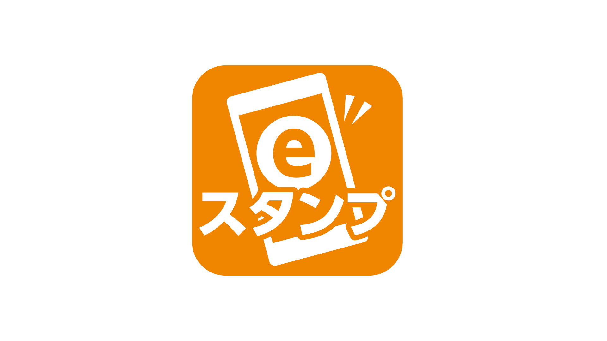
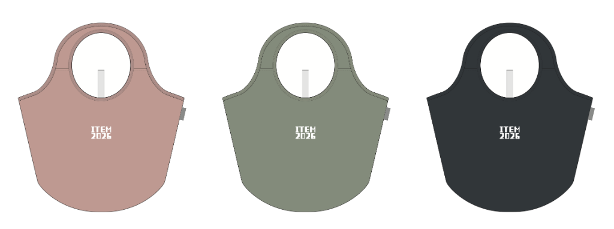
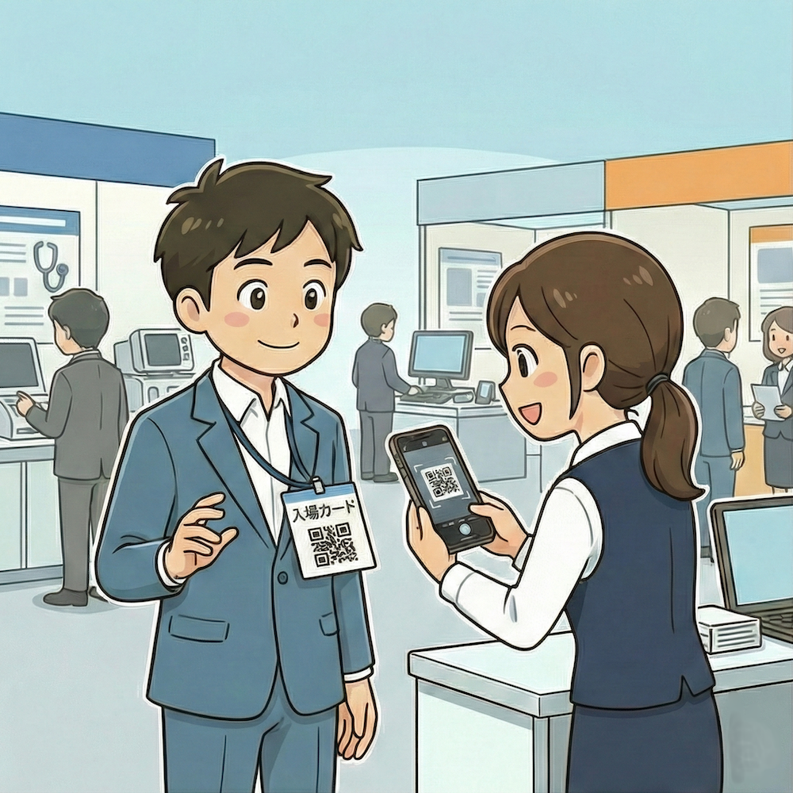
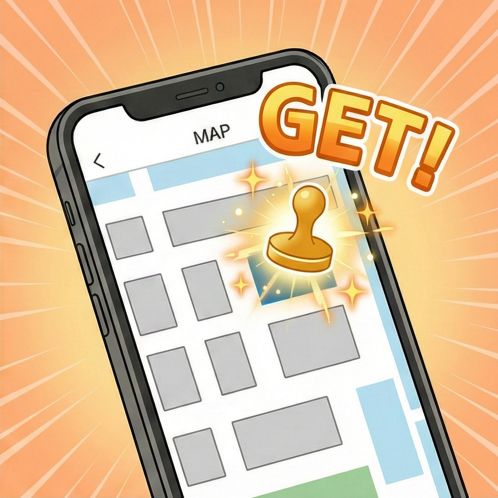
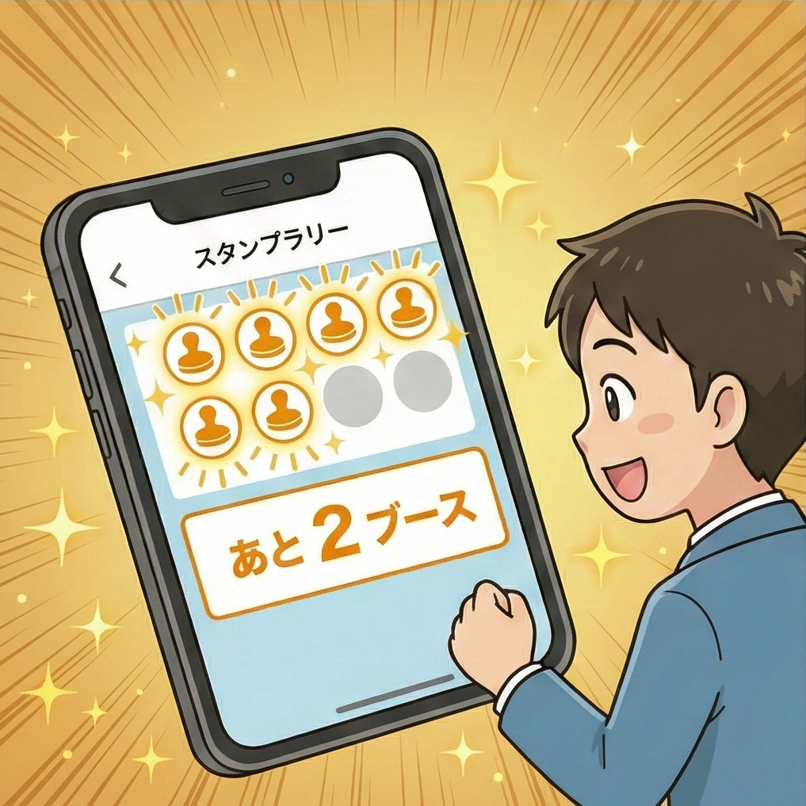

10ブース巡ってエコバッグをGET！
ITEM2026では、出展社ブースをより楽しく巡っていただけるデジタルスタンプラリーを開催します。対象ブースを訪問してスタンプを集め、素敵な記念品を手に入れましょう！
【達成記念品】オリジナルエコバッグ

※各日の午前と午後の先着順で、なくなり次第終了となります

対象ブースを訪問し、入場カードのQRコードを担当者に提示してスキャンしてもらいます。

スキャンが完了すると、デジタルスタンプが記録されます。

異なる10ブースのスタンプを集めるとコンプリート！